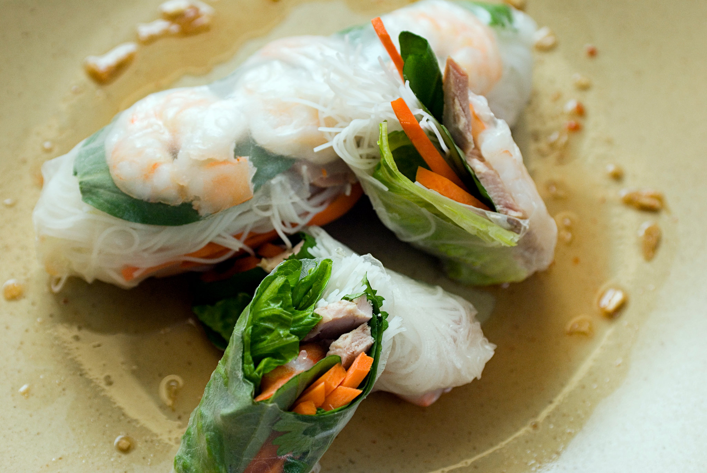

Summer Rolls

Ingredients
- Firm tofu -- 1 14 oz package
- Spring Roll wrappers -- 1 12 oz package
- Cucumber -- 1
- Thai peanut sauce -- 1/2 cup
Steps
- Spray a large pan or wok with cooking spray and heat over medium heat. Add tofu and cook, shaking the pan as needed, until browned on all sides, 8 to 10 minutes. Remove from the heat.
- Pour some water into a large, shallow plate. Place 1 spring roll wrapper in the water until soft, about 15 seconds, Remove to a work surface and place about 1 tablespoon tofu, 1 tablespoon cucumber, and 2 tablespoons broccoli slaw on the edge of the wrapper. Fold in the sides and wrap ingredients so it looks like an egg rolls.
- Repeat with remaining ingredients.
- Serve with peanut sauce and enjoy!